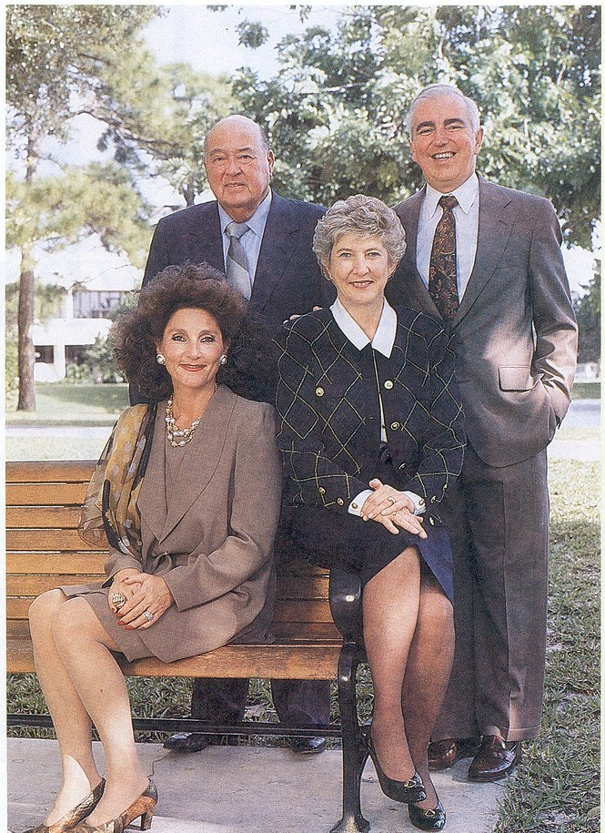

Two Lives Before Boca Raton
Eugene
Born in Kansas City in 1918, Eugene flew for Trans World Airlines, then built a career in insurance. In 1978, he founded the Boca Raton agency that became Lynn Insurance Group.
Christine
Trained as a nurse in Oslo, Norway, Christine worked a decade in Norwegian hospitals, then as head nurse aboard a cruise ship.

Eugene and Christine with Donald and Helen Ross on the Lynn University campus
Photo courtesy of Lynn University Archives